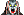
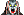

|

|
>> Содержание / Список кланов /
 FoundoutBlood FoundoutBlood
...И однажды обратил свой взор Познавший Кровь на людей, что воевали. И пришел он в одну из армий, что терпела поражение и прошел прямо в шатер военачальника и никто не посмел его остановить. Долго смотрел Познавший на обрюзгшее лицо того, кто когда то правил миром и думал, что особенного в этой голове, подчинившей себе столько голов. И к утру отвратил он свой взгляд от головы полководца, что лежала на столе и вышел он к воинам и сказал" Я буду вашим правителем, я приведу вас к победе" И повел он свою малочисленную армию на несметное войско и шел впереди, Познавший Кровь и демоны Бездны смеялись вместе с ним.И прошел он сквозь вражеское войско как нож сквозь масло, и разрывал он воинов голыми руками, и рвал их клыками и пил их кровь, что ручьями текла в этот день. И его воины воодушевивишись, пошли за познавшим и рассеяли вражеское войско, и многие по его примеру пили кровь и ели сырое свежее человеческое мясо и с удивлением поняли они, что это придало им сил, и восславили они Познавшего, а он смеялся смехом безумца, который познал суть разума. И повел он их дальше, и брали они штурмом города, и реки крови текли по улицам, где воины Познавшего Кровь утоляли свой голод. И создал он Великую Империю и страх раньше его армий покорял чужие страны. И вот однажды пировал Познавший Кровь в своем тронном зале, когда к нему пришел какой-то старик. Седой старец с безумным взором долго смотрел как Познавший перегрызает горло юной красавице, как жадно пьет кровь и как отбрасывает ее прочь, насытившись, своим рабам. "Почему твои слуги совокупляются с мертвой девушкой?" спросил содрогнувшись старик. "Таким образом, -ответил Познавший,- они совокупляются с Вечностью." "Я видел много таких обрядов на улицах города, и этот не самый ужасный, зачем ты сделал это, о ,Проклятый? Зачем создал Империю Зла, где люди превратились в демонов. Я видел как родители пьют кровь своих детей, как дети едят своих братьев и сестер.Неужели ты думаешь, что так они познают Кровь?" "Нет, ... ...ответил Познавший,- я просто показал им как можно жить другим способом, ваш мир не менее жесток, но свою жестокость вы прячете внутри. У всех этих людей внутри Зверь, сейчас он просто вышел наружу, кто ты старик, что не боишься задавать мне такие вопросы? " Я пророк,посланец Богов, что ужаснулись твоим деяниям. "Нет!- расхохотался Познавший Кровь, - ты не пророк, ты один из этих Богов, которому просто стало любопытно." И долго смотрел Познавший Кровь в глаза Древнего Бога пока не рассмеялись они вместе, и от смеха этого содрогнулись небеса. И схватил Древний Бог, которому раньше поклонялись как покровителю добродетели первую попавшуюся рабыню, и вырвал ее печень, и съел ее, и разломил ее череп и выпил ее мозг, не переставая смеяться, и овладел он затем ею всеми возможными способами и проделал он такое с несколькими десятками рабынь, а Познавший Кровь сидел напротив и смеялся над своей самой удачной шуткой, над Древним Богом, попавшимся на тот же крючок, что и поклоняющиеся ему люди. И продолжая улыбаться встал Познавший Кровь и вышел из тронного зала и покинул Империю, чтобы никогда больше в нее не возвратиться, оставив безумного Бога в безумной земле, ибо не дано им было познать Кровь...
- И создал он клан.
Официальный сайт клана: http://www.fob-clan.narod.ru
|
|
|